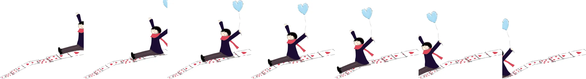
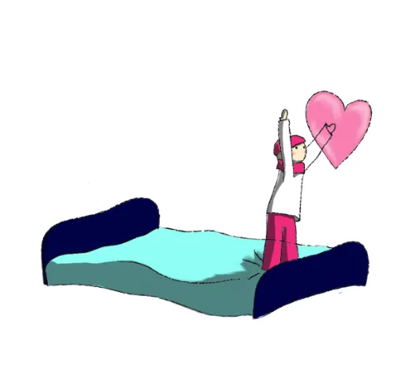

Un tour de magie, ça soigne aussi le moral.
Une vingtaine de magiciens bénévoles vont de chambre en chambre, auprès des enfants hospitalisés et de leurs familles. Plus de 300 visites par an.

De la magie au pied du lit
Les Magiciens du Cœur réunissent une vingtaine de magiciens amateurs et passionnés. Ils se déplacent bénévolement dans les établissements hospitaliers et interviennent de chambre en chambre, auprès des malades et souvent de leur famille.
L'association est aussi sollicitée par des associations caritatives et des organisateurs de manifestations pour offrir des spectacles.
Plus de 300 visites par an, toutes bénévoles.

Par où commencer ?
Nos actions
Les treize établissements où nous intervenons, et comment se passe une visite.
Voir nos actionsÉvénements
Nos spectacles avec les communes d'Anet, Galluis et Montfort-l'Amaury, en vidéo.
Voir les événementsLe bureau
Les six bénévoles qui organisent les visites et font vivre l'association.
Rencontrer l'équipe100 € donnés, 34 € réellement payés.
Grâce à la réduction d'impôt de 66 %, votre don pèse trois fois moins sur votre budget.